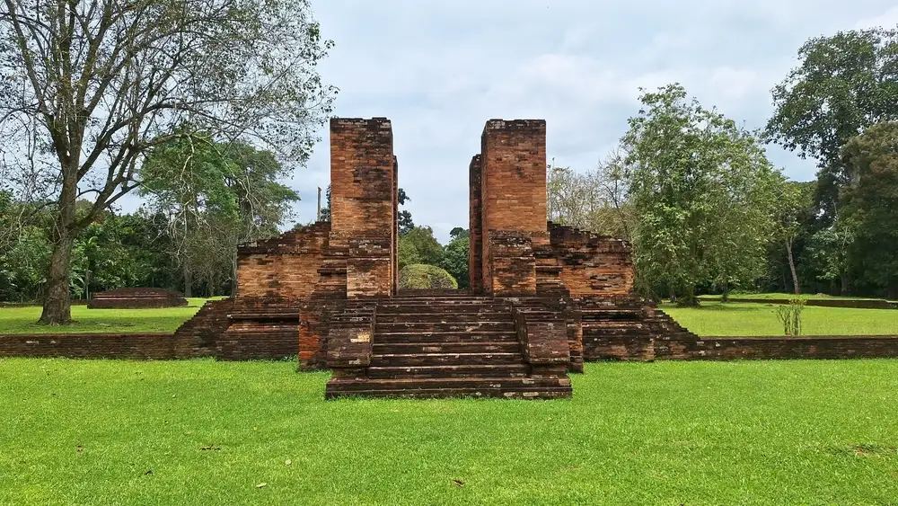
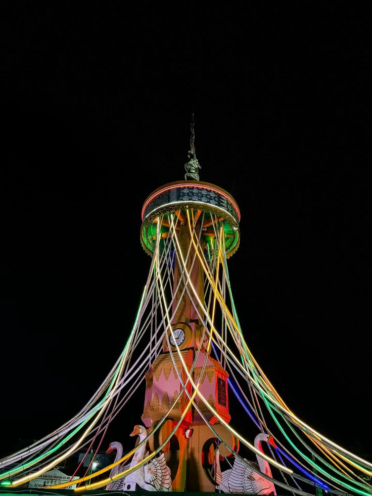
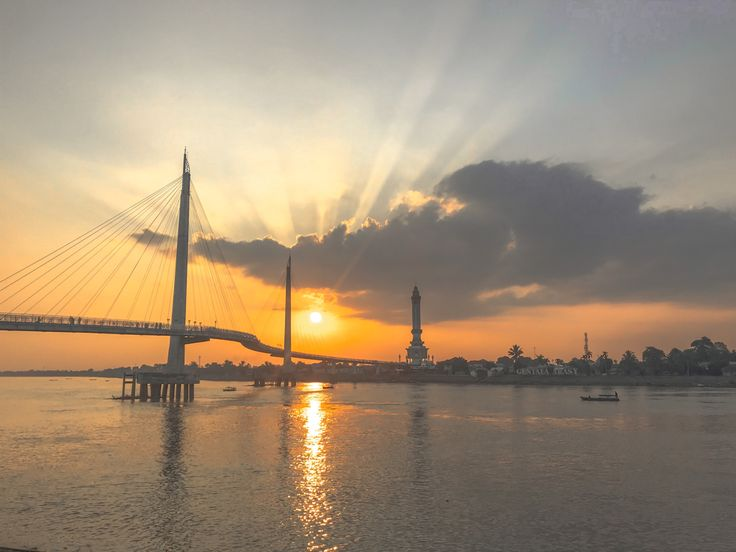
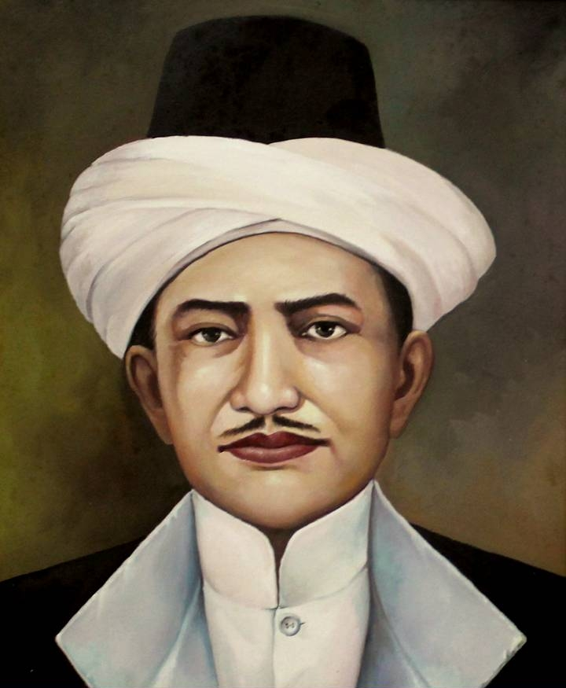
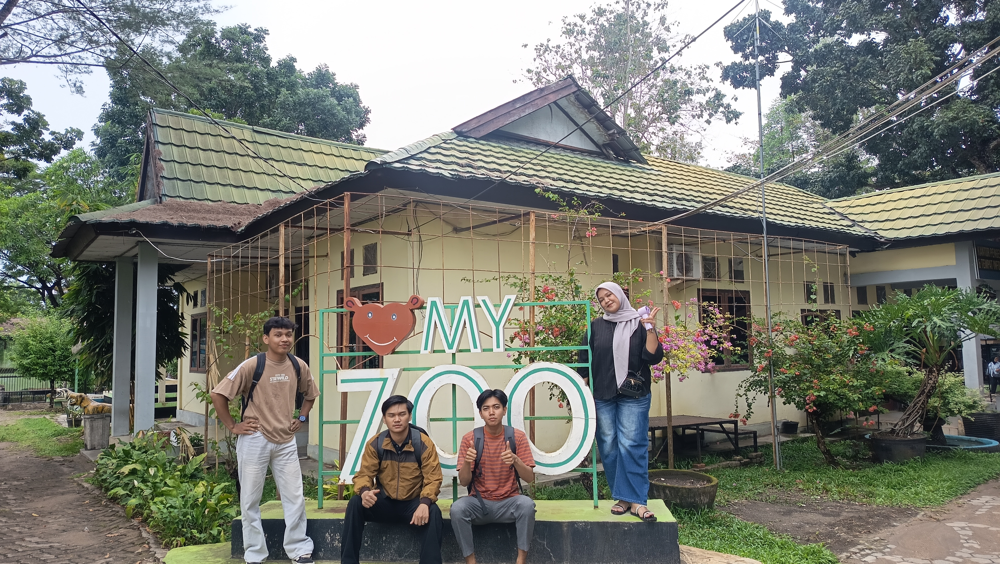

Bumi Pucuk Jambi Sembilan Lurah
Arus sungai, pusat kehidupan
Sungai Batanghari membentuk denyut sejarah Jambi. Jalur air ini menghubungkan permukiman, perdagangan, dan pertukaran budaya sejak masa lampau sampai hari ini.
- Warisan sejarah Candi Muaro Jambi dan Kesultanan Jambi.
- Budaya Melayu yang tumbuh di sepanjang Sungai Batanghari.
- Alam, kuliner, dan ruang publik yang menjadi daya tarik wisata.
“Sepucuk Jambi Sembilan Lurah”Semboyan yang merekam jati diri masyarakat Jambi dan warisan adatnya.
Perjalanan waktu
Linimasa Jambi
Abad ke-7
Kerajaan Melayu
Wilayah di tepi Batanghari berkembang sebagai simpul perdagangan dan pembelajaran Buddha. Candi Muaro Jambi menjadi salah satu jejak penting dari masa ini.
Abad ke-16
Kesultanan Jambi
Masuknya Islam melahirkan Kesultanan Jambi. Keris Siginjai kemudian dikenal sebagai simbol adat dan kebanggaan masyarakat Jambi.
1957
Provinsi Jambi
Jambi resmi menjadi provinsi. Kota Jambi terus tumbuh sebagai pusat pemerintahan, pendidikan, perdagangan, dan wisata budaya.
Warisan yang tetap hidup
Peninggalan bersejarah

Candi Muaro Jambi
Kompleks percandian Buddha yang merekam peran Jambi dalam jaringan budaya Asia Tenggara.

Keris Siginjai
Pusaka Kesultanan Jambi yang kini menjadi lambang kebanggaan daerah.

Batanghari dan Gentala Arasy
Ikon kota modern yang tetap bertaut dengan sungai sebagai nadi kehidupan Jambi.

Tokoh perjuangan
Sultan Thaha Saifuddin
Sultan Thaha Saifuddin dikenal melalui perjuangannya menentang kolonialisme Belanda. Namanya dikenang sebagai pahlawan nasional dan salah satu figur penting dalam sejarah Jambi.
Keris Siginjai mengikat memori tentang kesultanan, adat, dan identitas Jambi.
Di balik halaman ini
Tahapan riset tim
- 01
Survei lokasi
Mengamati situs sejarah, destinasi wisata, dan ruang publik Jambi untuk memahami konteksnya secara langsung.
- 02
Wawancara narasumber
Menghimpun informasi dari pengelola destinasi, instansi terkait, dan masyarakat setempat.
- 03
Dokumentasi visual
Menggunakan foto lokasi sebagai pendukung cerita sejarah, budaya, dan wisata Jambi.

Lanjutkan penjelajahan
Temukan Jambi dari sisi lain
Lihat data destinasi dan koleksi foto untuk mengenal alam, budaya, serta kuliner Jambi.